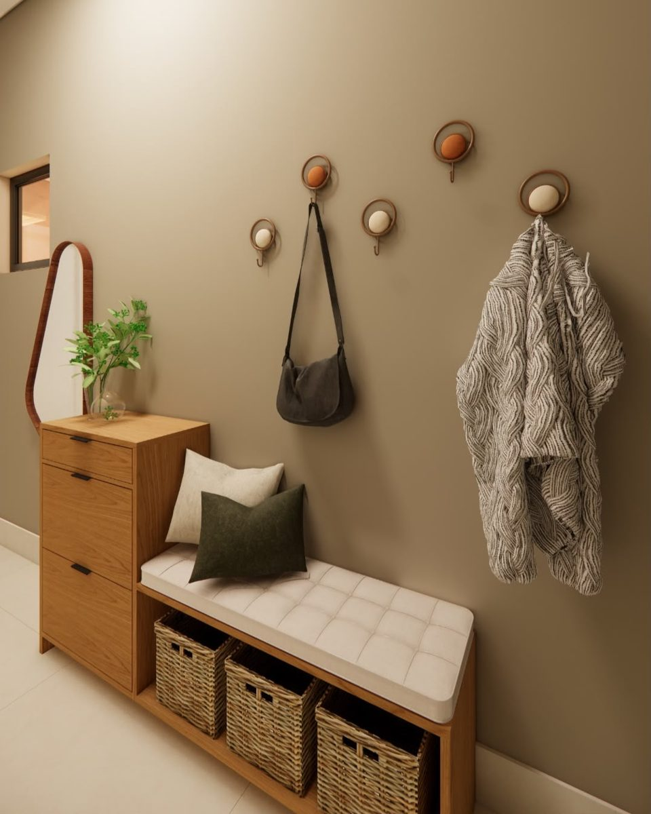
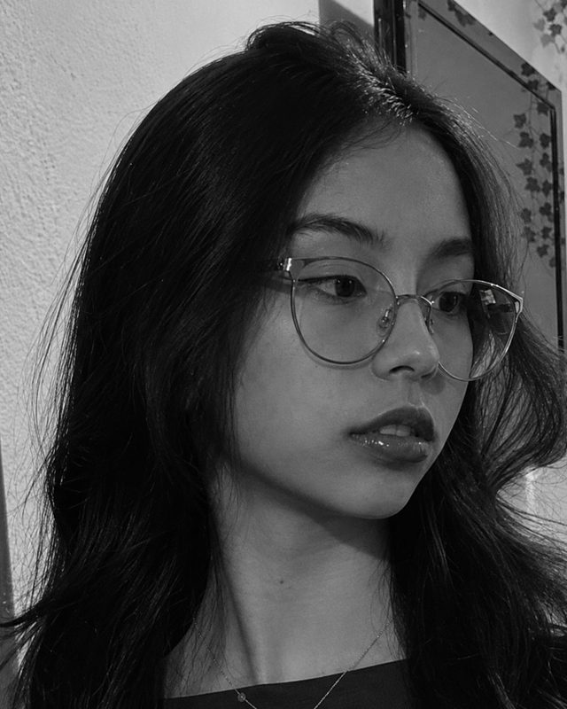
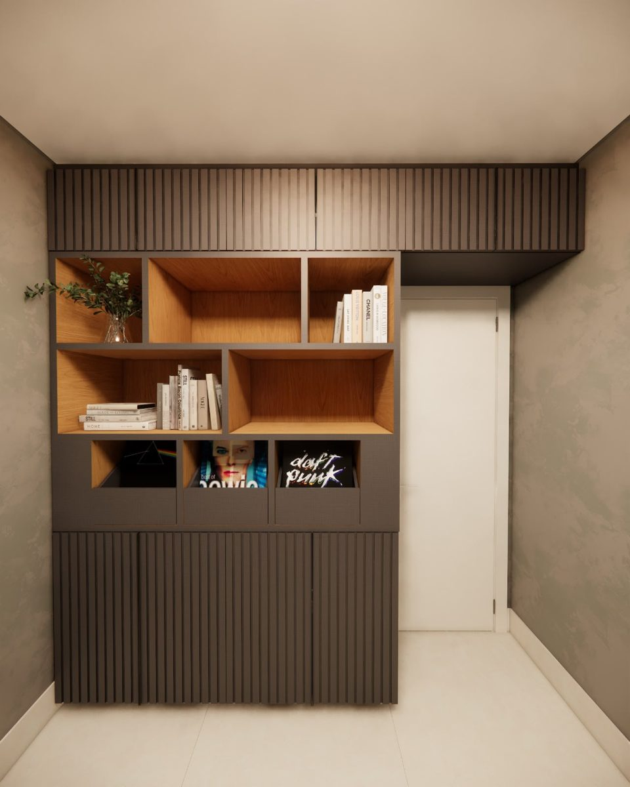
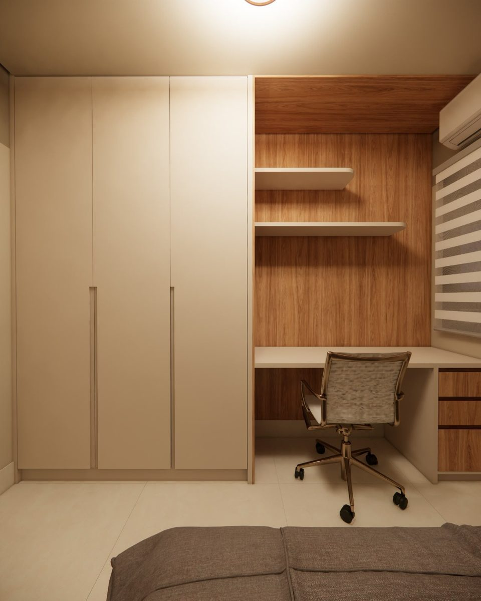
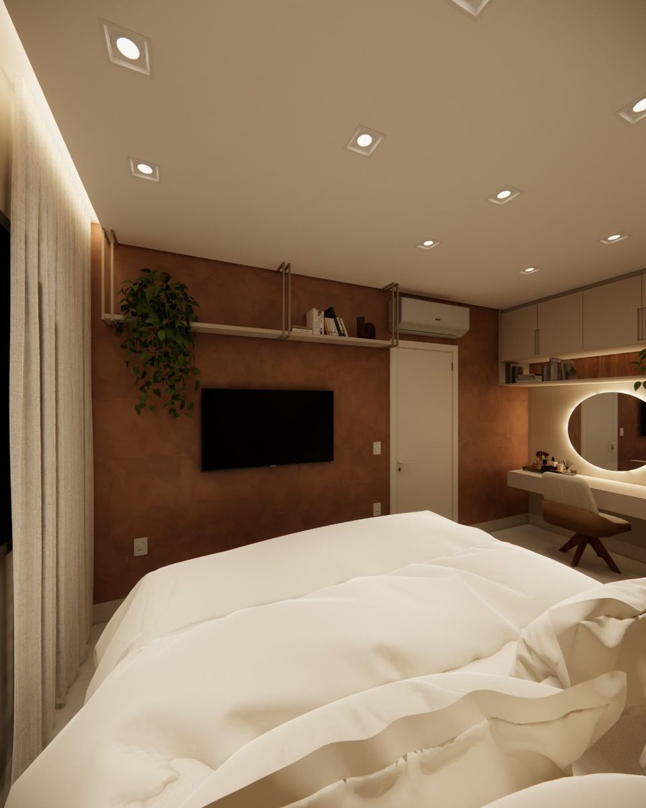

Hall de entradaDesign de interiores

01 · Quem sou
Tenho 21 anos e estudo Arquitetura e Urbanismo em Uberlândia. Gosto de projetos que nascem do lugar: luz, materiais honestos e espaços que fazem sentido para quem vive neles. Há seis meses acompanho o projeto virar obra na Construtora HOME.
02 · Onde estudo e trabalho
Abr 2026 — hoje · 6 meses
Construtora HOME
Estágio em arquitetura · acompanhamento de projeto e obra · Uberlândia
2024 — hoje · 5º período
ESAMC Uberlândia
Arquitetura e Urbanismo · bacharelado
03 · Projetos
01 / 04



04 · Contato
© 2026 Marcela Kaminise · Uberlândia · Casa 3D: “Duplex”, de SrMonteiro (CC BY 4.0)